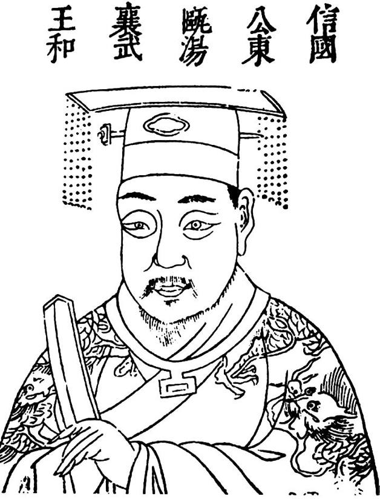
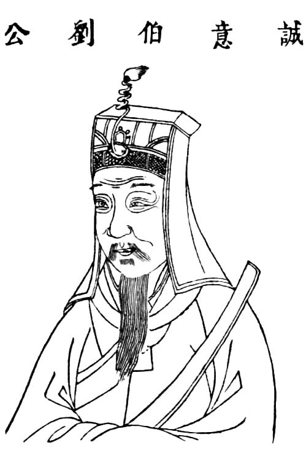

我们发现，朱元璋死的时候，明初精英居然一个不剩！
这是朱元璋为子孙计，算尽机关，巧为施行的结果。当初追随朱元璋起兵诸将，及为其征召的文耆谋臣，除少数如常遇春、邓愈、胡大海、沐英死于军中，其余要么罹于狱祸，要么被赐自尽，要么疑为朱元璋毒死，得善终者似仅汤和一人。《明史》汤和传说：“和晚年益为恭慎，入闻国论，一语不敢外泄……当时公侯、诸宿将坐奸党，先后丽法，稀得免者，而和独享寿考，以功名终。”做人做到这地步，才保了平安。实际上，低调做人只是汤和“独享寿考”的部分原因；洪武二十三年起，他“感疾失音”，形同废人，朱元璋曾召见之，“与叙里闬故旧及兵兴艰难事”，“和不能对，稽首而已”——人到了这地步，连话都不会说，只会叩头，自然也就可以让他自己老死，不必除掉他了。
其他的人，则不能不是另一种命运。
徐达不仅是明初最伟大的将军，且公忠持谨，无私、识大体，追随朱元璋三十年，功勋盖世，但从不居功自傲，堪称职业军人的典范。朱元璋屡加试探，用各种小花招窥视徐达内心，每一次都不过进一步证明了徐达的高风亮节。但朱元璋绝不会因此释疑。洪武十七年徐达患病，开始，病情看上去很重，像是不起的样子，朱元璋表现得很积极，几次亲往探疾，积极调集医生治疗。治了很久，徐达居然出现了好转的迹象。就在此时，朱元璋忽然派使者赐膳，徐达一见，当即泪如雨下，在内使的注视下吃了送来的东西；待内使走后，徐达密令给他治疗的医生赶快各自逃命。果然，不久徐达就死去，年仅五十四岁。朱元璋闻徐达已死，“蓬跣担纸钱，道哭至第”，下令抓捕所有曾为徐达看病的医生，全部杀掉。[22]此不载于正史，然细节精彩、情理皆然：从朱元璋起初得知徐达沉疴而暗喜，到表演对“布衣兄弟”情深义重的伪善一幕，徐达病情转好令他始料不及，而痛下杀手、毒飨徐达，再到假装悲恸、以惩处庸医为由卸责灭口，笔笔入木三分，画活了朱元璋，我宁肯采信于它。
值得采信的根据，亦因投毒这事朱元璋至少还干过一回。李文忠，位列“功臣榜”第四的大将、曹国公；他是朱元璋姐姐之子，也是除朱元璋后代外朱家唯一骨血，但他并非仗着这层亲戚关系登上高位。史载李文忠作战异常勇敢，“临阵踔厉风发，遇大敌益壮”，屡建奇功；更兼不但能武，而且能文，好读书、长诗文、有思想，以儒将鸣于当世。然而，恐怕就是有思想这一点害了他。建国后他被释去兵权，居家与高士儒者交，忧国忧民，屡屡将所讨论的意见谏达上聪，如劝朱元璋“少诛戮”，对东征日本的计划表示异议，批评宫中宦官太多，等等。一来二去，朱元璋早就不爽。洪武十六年冬，李文忠病，朱元璋也是亲往探视，也专门派人护其医药，翌年三月，正当英年的李文忠不治而故。这次，朱元璋主动指责李文忠是被毒死的，负责治疗的“诸医并妻子皆斩”——滑稽的是，医生们与李文忠素无仇隙，他们为何要冒死毒害一个身为皇戚的大人物呢？——总之，证据消失了。
还有一位也被毒死，那便是被誉为“张良再世”的传奇人物、明初智慧象征刘基（伯温）。刘辅佐朱元璋得天下之事，人尽知之，我们要讲的是天下大定之后的刘朱关系。明建国后，朱元璋累次提出进其爵秩，刘基均坚辞，只接受了远低于其贡献的伯爵封号。要他当宰相，亦不受命。洪武四年，刘基早早引退，回到家乡做老百姓。所以如此，只是出于文人的狷介。问题是，朱元璋为罗致天下人才效力，曾明令：“寰中士大夫不为君用，是自外其教者，诛其身而没其教。”[23]刘基的做法，等于带头违抗此令。如果明哲保身，刘基应该改变态度，但史传说他“性刚嫉恶，与物多忤”，“慷慨有大节”，“义形于色”，他佐朱元璋得天下，乃为苍生，功成身退则是为了自我人格的完整，他在拒绝出任宰相时没有虚与委蛇，寻找借口，而是直截了当表示不喜欢、不想干：“臣疾恶太甚，又不耐繁剧。”对此，朱元璋衔之颇深，几年后还借故暗示刘“忠臣去国，不洁其名”。

耆旧中独享寿考的信国公汤和。
汤和是朱元璋打小的玩伴，在功臣耆旧中独享寿考。之能如此，一因汤和特别谨慎，“入闻国论，一语不敢外泄”，二是他“感疾失音”、形同废人。

诚意伯刘基。
刘基，朱元璋最重要的谋臣，在民间以“刘伯温”传为神奇。建国后，执意隐退，令朱元璋不快。他的死很神秘。
刘基执意退休后，胡惟庸被任命为左丞相。这是一个典型的政治小人，刘基曾再三劝阻朱元璋不要拜其为相，不听。现在，胡正好寻隙报复，而且他揣摩过这一定会得到朱元璋的支持。胡支使人检举刘基替自己相中一处墓地，称此地“踞山面海，有王气”。朱元璋“颇为所动”，亲笔致信刘基，“历言古之君子保身之福，作孽之祸，及君臣相待之义，词甚详；末言念卿功，姑夺其禄而存其爵。”[24]这是严重的警告。刘基得书，照例诣阙“谢恩”，“乃留京，不敢归”。留京期间，像是对胡惟庸的鼓励和奖赏，又像是专做给刘基看，朱元璋将胡惟庸“转正”、升为右丞相；刘基闻知此讯，“大慼”曰：假如当时是我说错了（指对朱元璋力阻胡惟庸为相），那就是苍生之福啊！于是，“忧愤疾作”，就此病倒。在这时，我们见到了《明史》中惊人的一笔：刘病重，朱元璋偏偏派刘基最反感——反过来同样也对刘基心怀怨恨的胡惟庸为代表，来探望刘基（“久之基病，帝遣惟庸挟医视”）。正是在这次以皇帝名义进行的探视过程中，胡惟庸拿出一种药，让刘基服用。刘用后“有物积腹中如拳石”。随后，朱元璋放刘基还乡，至家“居一月而卒”。与徐达、李文忠之死不同，这次朱元璋没有亲自施毒，利用两个政敌之间的恩怨，假人手行之。几年后，胡惟庸事发，有人揭发刘基是被胡毒死，使胡罪状上重重加上一条，而胡惟庸只好咎由自取，他显然不能辩称自己其实是揣摸上意、替君除忧。
胡惟庸的下场，是有“前车之鉴”的。作为朱元璋的前水军司令，德庆侯廖永忠立有两项大功：一是鄱阳湖朱陈大战时，廖在最紧急关头，击退张定边[25]，救了朱元璋一命；一是至正二十六年朱元璋派他迎韩林儿[26]归应天，途中制造翻船事故，淹死韩林儿，从而为朱元璋称帝扫清障碍。这两项功绩，对朱元璋皆同再造，但廖永忠干掉韩林儿后，朱元璋却声明与己无关，是廖自作主张。洪武三年大封功臣时，朱元璋再次做秀，将廖“止封侯而不公”，并指责廖害死韩林儿是“窥朕意、徼封爵”。廖永忠便永远背上这口黑锅。洪武八年，朱元璋又以某种借口将廖永忠“赐死”。胡惟庸其实就是“廖永忠第二”，两人故事如出一辙。
洪武二十五年，江夏侯周德兴——那个与朱元璋“少相得”的小伙伴——“以其子骥乱宫，并坐诛死”。二十七年，汤和病殁。加上十年前被毒死的徐达，朱元璋共患难的“同里弟兄”全部死光。
蓝玉案后，受封公爵者（亦即明建国的顶级功臣）中的最后两人，颍国公傅友德和宋国公冯胜，先后赐死。二十六年蓝玉死，二十七年傅友德死，二十八年冯胜死。连续三年，一年除掉一位公爵。
朱元璋可以高枕无忧了。洪武三十一年，他放心地死去，留给太孙朱允炆一个他认为十分“安全”的皇位。